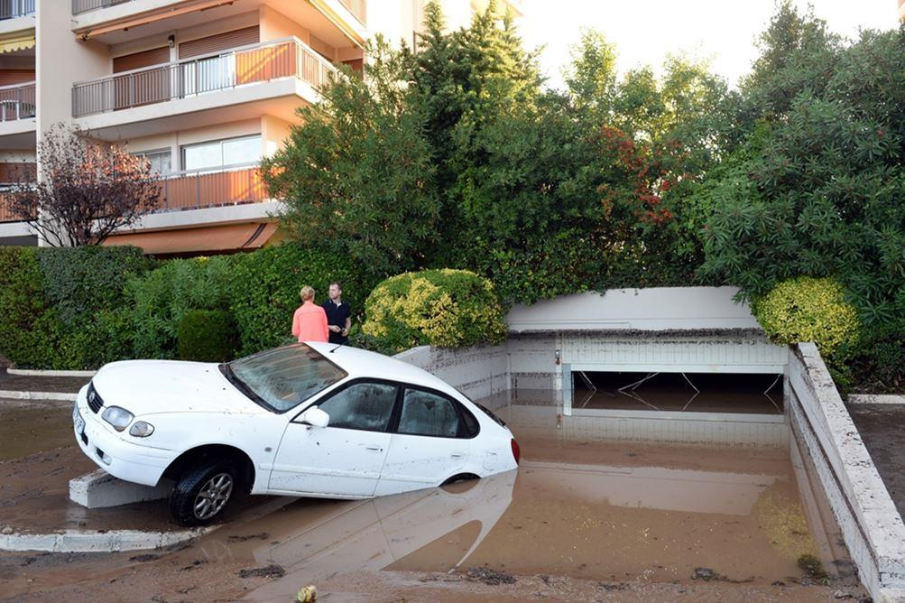
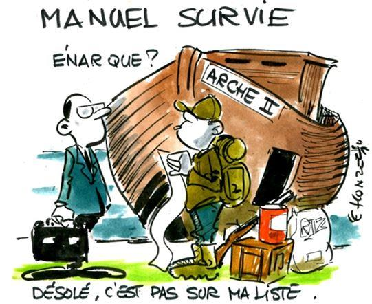

« À vouloir étouffer les révolutions pacifiques, on rend inévitables les révolutions violentes »
(JFK)
Voici ce que j’écrivais en 2015, il y a quelques années, dans un édito consacré à l’inculture du risque ce qui montre que le temps passe vite, sauf actuellement… Le temps est relatif, ce que nous savons depuis Einstein et… la pandémie.
Ce qui est bien avec l’inculture du risque, c’est qu’elle est comme l’imprévoyance applicable globalement à tous les sujets.
L’inculture du risque touche tous les pans de nos habitudes.
Cela va des inondations aux cyclones en passant par les attentats, les guerres, ou tout simplement les coupures d’électricité et les tempêtes… ha, j’oubliais aussi les crises économiques ou les pandémies.
Prévoir ne sert à rien, être prévoyant ne sert à rien.
Je pense que l’on va enfin pouvoir discuter entre gens sérieux d’un sujet sérieux qui est celui de la prévoyance, et n’imaginez pas que les cigales seront récompensées.
Pour vous le dire autrement, quand les riches maigrissent, les pauvres meurent.
Quand les fourmis souffrent, les cigales grillent.
C’est la revanche des fourmis et des prévoyants.
Les autres se sont tout simplement trompés. Ce n’est pas bien grave. Les blessures d’égo même douloureuses sont nettement moins gênantes que les blessures physiques.
Prenez bien soin de vous, et cigales comme fourmis, unis et solidaires.
Charles SANNAT
L’inculture du risque, l’incompétence et l’indécision voilà ce qui explique le nouveau drame que nous avons vécu dans le sud de notre pays.
Ce drame se reproduira ici, là-bas ou ailleurs. Cela se reproduira tant que nous laisserons l’inculture du risque se développer dans notre pays, l’indécision et l’incompétence.
Vous allez me dire qu’il n’y a rien d’économique dans les inondations qui viennent d’avoir lieu. Et bien si… il va falloir indemniser tout ce bazar matériel. Pour les morts, hélas, aucune indemnisation ne pourra venir réparer leur disparition. Disparition que je trouve révoltante. C’est donc bien un sujet économique, mais en réalité c’est surtout un sujet sociologique qui touche le comportement de l’ensemble des acteurs de la société face à un évènement brutal, violent et par nature imprévisible.
L’indécence de Mamamouchi 1er donnant des conseils aux gens… une fois l’orage passé…
Personne ne l’a encore formulé alors je le fais. Le président de la République n’a pas à s’abaisser à donner des conseils du niveau de « bison futé » l’intelligence en moins. Il fallait les conseils AVANT le drame. Pas après.
« Oui mais on ne pouvait pas savoir »… si on pouvait savoir… car tout cela n’est qu’une question de culture du risque, de compétence et de prise de décision.
Si vous me confiez la responsabilité d’une maison de retraite (et je ferai sans doute pleins d’autres bêtises), je sais d’avance que mes anciens ne pourront pas courir un 100 mètres en cas de problème. Alors ceux du rez-de-chaussée auront le droit, à chaque alerte orange, d’être monté à l’étage PRÉVENTIVEMENT c’est-à-dire avant que l’eau ne monte… alors évidemment les abrutis comme moi passent pour des « fous », des « emmerdeurs » quant au camping je réveille tout le monde en pleine nuit parce que l’orage est violent… Mais comme disait le pépé, « un homme averti en vaut deux »… (je sais ce n’est pas du pépé mais il le disait quand même). Alors oui c’est pénible mais c’est cela la culture du risque et de la compétence. On ne se laisse pas surprendre parce que l’on sait d’avance qu’il y aura des inconnues. C’est ce que l’on appelle avec humour les « inconnues connues ».
On trouvera toutes les excuses du monde possible. Il n’y en a pas. C’est de l’incompétence, de l’inculture du risque et de l’indécision. L’incapacité de réagir, d’anticiper, de réfléchir, de prendre une décision.
Bilan, nos anciens noyés dans leur chambre. Aucune excuse. Aucune. Que le président rentre vite en son Palais et qu’il s’y cache.
Sortir la voiture du sous-sol… et pour la mettre où ?
Voilà encore une fois une conséquence dramatique de notre inculture du risque, de la croyance que l’État peut tout, que les pompiers seront là, que l’hélitreuillage aura lieu à temps, que le portable marchera, que tout ira bien parce que nous sommes en sécurité.
Tout cela est faux. Lorsqu’il y a un accident, les services de secours peuvent être à 15 minutes et pendant ces 15 minutes vous êtes seul. Les citoyens sont seuls face au problème.
Notre sinistresse de l’Éducation nationale nous explique tout plein de réformes, mais jamais, jamais, on a pensé qu’une seule fois rendre obligatoire pour tout bachelier le brevet de secourisme. Connaître les premiers gestes, responsabiliser, autonomiser, savoir et être capable de prendre soin de l’autre, de son voisin, de ses proches. Voilà de la solidarité concrète, par de la solidarité à la sauce « Terra Nova » et autres donneurs de leçons de salon.
Alors l’inculture du risque a atteint de tels sommets que désormais les gens descendent dans les sous-sols inondés pour sortir des voitures assurées par ailleurs… pris au piège ils meurent noyés. Je n’en veux pas à ces pauvres bougres, je suis profondément peiné pour ceux qu’ils ont laissés. J’accuse en revanche notre société toute entière de décrédibiliser ceux qui véhiculent une culture du risque, de l’anticipation, de la préparation, de la formation et de la responsabilisation en les faisant passer pour des « paranos », des « fous furieux » et parfois au mieux pour des doux dingues…
Aucune personne n’aurait dû perdre la vie dans un sous-sol inondé, si ceux qui avaient un boulot à faire avaient convenablement fait leur boulot ! Parce que les gens doivent être formés et informés à s’aider et à aider les autres. Si un copain bourré comme un coing veut prendre sa voiture après votre soirée vous aurez normalement la présence d’esprit de le retenir y compris en étant pas « sympa », pourquoi ? Parce que la sécurité routière a fait œuvre de pédagogie, d’information et vous a expliqué ce qu’il fallait faire… pour éviter un drame. Il en va de ce principe pour tous les autres domaines.
Un concert de Johnny et un match de foot
Une alerte orange… indécision. Incompétence. Deux rassemblements majeurs. Des milliers de personnes et je vais vous dire ce que je pense, c’est que ces milliers de concitoyens ont su faire preuve d’une immense intelligence collective en l’absence de toutes consignes de l’État et que le bilan est remarquablement léger par rapport à ce qu’il aurait pu être !
« On pouvait pas savoir »… l’excuse des gémiards et des victimes !
Oui mais on ne pouvait pas savoir… dès lors la propagande médiatique se met en branle, il faut que le système se protège. Ce n’était pas sa faute, l’intensité était exceptionnelle, on ne pouvait pas savoir, c’est pas la faute à Météo-France, si la météo peut pas prévoir, la préfecture peut rien faire, si la préfecture peut rien faire, alors les pompiers et les gendarmes peuvent rien faire non plus… et pourtant !
Et pourtant pas un abruti pour appuyer sur les boutons des sirènes… oui vous savez la sirène en cas d’attaque, de bombardement ou de problèmes nettement moins graves mais qui veut dire… « Allumez vos radios, écouter les consignes, mettez-vous à l’abri »… on est face à un gros problème que vous devez, chacun à vos postes, traiter comme un gros problème.
Encore une fois, l’inculture du risque, l’indécision et l’incompétence. Voilà ce qui décrit parfaitement le fonctionnement ou devrais-je dire le non-fonctionnement de la société française…
Passer pour un con quand on a 4 packs d’eau d’avance… Expérience sociale à faire chez soi ou au travail. Édifiant !
C’est à tous les niveaux que nous faisons face à cette déresponsabilisation, en cette fausse croyance consistant à croire qu’il n’y aura jamais de problème et que l’État peut tout. Combien de fois ai-je vu au mieux de l’incompréhension au pire de l’inquiétude concernant ma santé mentale lorsque j’expliquais que j’avais de quoi tenir quelques jours en cas de pépin… « mais il va pas bien celui-là »… si, il va bien, mais il y en a 20 qui vont encore moins bien que moi vu qu’ils sont carrément morts…
Pourtant sur le site même du ministère du Développement durable sensé avoir en gestion la notion de « prévention des risques » on vous explique qu’il faut avoir un Kit de survie… oui, oui, c’est officiel. Bon il faut fouiller parce que si on le disait trop fort les gens pourraient être effrayés…. « heiiiiin, koi…. On népa en sécurité ? » si, nous sommes en sécurité jusqu’à ce qu’un problème arrive…
Bon voilà la liste qui vous fera passer pour un fou furieux auprès de vos collègues à la machine à café. Faites l’expérience et dites que vous avez d’avance dans un « Kit d’attente des secours pendant 3 jours » (dénomination officielle) les articles listés ci-après tout en leur faisant un topo le plus sérieusement du monde en reprenant mot- pour mot ce qui a été écrit sur le site du ministère…
Tu sais Pierre, Paul, Jacques (en fonction du prénom du collègue que vous prendrez à témoin) « Dans une situation d’urgence, les réseaux d’eau courante, d’électricité, de téléphone peuvent être coupés. Il faut être prêt à vivre de manière autonome quelques jours (72 heures) avec certains articles essentiels, à son domicile (confinement) ou en dehors après un ordre d’évacuation. Attention à ce que le sac ne soit pas trop chargé. Il faut préparer les objets de première nécessité indiqués ci-après et les regrouper dans le sac d’urgence qui sera placé dans un endroit facile d’accès pour pouvoir le prendre le plus rapidement possible ».
Normalement à la fin de ce paragraphe votre gentil et aimable collègue pense déjà qu’il faut vous transférer en psychiatrie…
Et maintenant achevez-le avec la liste précise des éléments de survie…
« À la maison : disposez en permanence des articles suivants :
- Eau potable : deux litres par personne par jour, pour au moins trois jours
- Nourriture non périssable : provision pour au moins trois jours consommant peu d’eau : barres énergétiques, fruits secs, conserves, petits pots pour bébé
- Outils de base : ouvre-boîte manuel, couteau de poche multifonction…
- Radio à piles : piles de rechange ou à dynamo
- Lampe de poche : piles de rechange ou à dynamo
- Bougies
- Briquet ou allumettes
- Trousse de premiers soins : antiseptiques, analgésiques, bandages adhésifs, compresses de gaze stériles, ciseaux…
- Lunettes de secours et appareils d’assistance
- Double des clés de maison pour éviter d’avoir à les chercher et risquer de laisser sa porte ouverte ou de se retrouver bloqué dehors ensuite
- Double des clés de voiture pour éviter de les chercher ou de les oublier et perdre du temps en cas d’évacuation par la route
- Panier et nourriture pour le transport des animaux domestiques et laisse, muselière
Pour encore plus de précaution :
- Sifflet pour signaler votre présence aux secouristes
- Masques antipoussières pour filtrer l’air contaminé
Ces articles essentiels permettront à vous et votre famille de subsister pendant les 3 premiers jours d’une situation d’urgence. Ce délai de 3 jours est le temps que pourraient prendre les secours pour venir en aide aux sinistrés ou que pourraient mettre les services essentiels à se rétablir ».
Voilà, vous venez de perdre tous vos collègues…vos amis ne vous parlent plus. Vous êtes seuls… Votre femme veut vous quitter !
Par un mécanisme que je ne suis pas capable d’expliquer, nous avons abdiqué tout bon sens, toute prudence, toute préparation, toute précaution, et finalement nous avons perdu la notion même de culture du risque.
À la limite pourquoi pas… mais encore plus fort, celui qui veut tout de même adopter une attitude responsable, qui souhaite anticiper, se préparer, est vu comme un fou furieux et ce phénomène est encore plus grave car il pose comme principe implicite que le « prudent » et le « prévoyant » n’est pas normal, pire, son existence même montre aux autres imprévoyants qu’ils sont inconséquents ce qu’il leur est insupportable. Il est donc plus facile de dire que l’autre est fou que de s’avouer à soi-même ses propres manques. C’est l’éternel combat entre les cigales et les fourmis, sauf que les cigales l’ont largement emporté.
Désormais nous évoluons dans une société de l’inculture du risque, l’incompétence et l’indécision. Vous devez vous en souvenir pour chaque acte de votre vie. Au prochain krach et il aura lieu on vous dira « on ne pouvait pas savoir ». A la prochaine catastrophe, et elle aura lieu, on vous dira « on ne pouvait pas savoir ». Ne soyez pas victime de ce système.
Alors, en attendant, préparez-vous, il est déjà trop tard !
C.S.
Insolentiae.com est le site sur lequel Charles Sannat s’exprime quotidiennement et livre un décryptage impertinent et sans concession de l’actualité économique. Merci de visiter son site. Vous pouvez vous abonner gratuitement à la lettre d’information quotidienne sur www.insolentiae.com.
Partager cette page